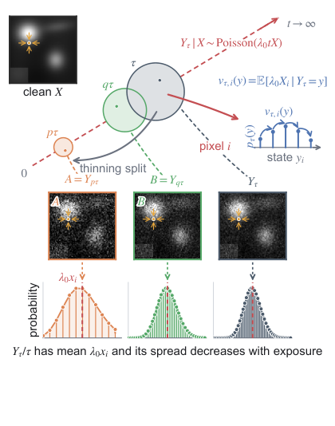

面向低计数图像去噪的粒子到达率匹配
摘要
当有限光照或剂量在显微成像中仅产生少量检测到的粒子（例如光子或电子）时，就会出现低计数成像，导致测量结果被信号相关的泊松散粒噪声主导。 监督去噪器通常需要成对的干净与含噪观测， 而许多自监督方法利用空间或时间冗余，而不直接估计潜在的粒子到达过程。 我们提出 PARM，一种基于粒子到达率匹配的自监督去噪框架。 通过将曝光期间的粒子累积建模为泊松计数过程，PARM 以潜在干净率的后验均值识别条件粒子到达率场。 随后，泊松稀疏化将每个观测拆分为互补的低曝光视图，这些视图为彼此提供自监督的率目标。 在实现中，网络估计条件率的归一化空间分配， 而观测到的总计数决定其全局粒子质量。 在合成数据、受泊松噪声污染的自然视频序列 以及真实低剂量电子显微镜上的实验表明，该方法具有领先或富有竞争力的性能，同时有效保留精细结构。 因此，PARM 为无法获得干净参考时的低计数图像去噪提供了一种具有统计基础的方法。
索引词：
Low-count imaging, Poisson image denoising, self-supervised denoising, computational microscopy, electron microscopy.I 引言
低计数成像出现在许多实际领域中，例如夜间监控 [1]、自动驾驶 [2]，以及光学显微 [3]和电子显微 [4, 5]。 在有限光照、短曝光时间或低辐射剂量下，传感器仅捕获少量稀疏的离散粒子，例如光子或电子。 这些离散到达的随机变化引入信号相关的泊松散粒噪声，使底层结构退化。
现有方法可分为两大类：基于模型的方法和基于学习的方法。 基于模型的框架采用泊松似然 [6, 7]、方差稳定化 [8]或无偏风险估计 [9]，而监督学习方法利用成对的干净与含噪观测来优化深度神经网络 [10, 11]。 然而，对于动态场景和科学成像模态，可靠的干净参考很少可得。 自监督方法通过利用独立受损的观测 [12]或内部冗余 [13, 14, 4, 15]，绕过了对干净目标的需求。它们通常将每个测量视为在固定曝光下获取的含噪图像，而不是视为来自依赖曝光的泊松计数过程的样本。
我们提出 PARM（Particle Arrival-Rate Matching），一个基于支配泊松计数观测的粒子到达率动力学的自监督框架。 受流匹配与生成器匹配 [16, 17] 启发，我们将粒子累积建模为以曝光为索引的概率路径。通过将 Kolmogorov 前向方程 [18] 应用于所得计数动力学，我们推导出条件粒子到达率场，它等于干净粒子到达率的后验均值，并且是 PARM 的理论目标。在实际中，我们的模型学习该场的归一化空间分配。
由于潜在的干净粒子到达率不可观测，PARM 通过泊松稀疏化构造自监督目标。每个原始观测被拆分为互补的低曝光视图，其归一化计数提供有限曝光率估计。为了在极低计数情形下进一步稳定学习，我们将双向速率匹配与软跨视图一致性正则化相结合。
我们的贡献总结如下：
- 1.
我们通过依赖曝光的泊松计数过程来建模低计数图像去噪。利用 Kolmogorov 前向方程，我们推导出条件粒子到达率场，并确立其与干净粒子到达率后验均值的等价性。
- 2.
我们通过泊松稀疏化从单个含噪观测中建立有限曝光率目标。在广义 Kullback–Leibler（GKL）散度下，我们证明利用这些自监督目标的优化与监督式干净速率回归共享相同的贝叶斯最优预测器。
- 3.
我们将条件粒子到达率场分解为其总条件率和归一化空间分配。网络学习该分配，而推理将全局粒子质量锚定到观测到的总计数。双向速率匹配与软跨视图一致性正则化进一步稳定超低计数情形下的学习。
- 4.
在合成泊松数据、标准含噪视频和真实低剂量电子显微镜数据集上的实验表明，PARM 取得了领先或具有竞争力的性能，在极端噪声下具有定量增益和结构保持。
II 相关工作
II-A 泊松与低计数图像去噪
低计数图像观测通常由条件泊松模型 表征，其中 是潜在强度， 表示有效曝光量或总计数尺度。
基于模型的方法，例如变分框架 [6]，将泊松似然与全变分等先验 [19, 7] 相结合，以恢复受损观测。 特别地，PURE-LET [20] 通过泊松无偏风险估计来优化变换域阈值函数的线性展开。 或者，采用方差稳定变换，特别是 Anscombe 变换 [8]，将泊松观测高斯化，从而能够针对泊松噪声部署常规高斯去噪器 [21, 22, 23, 24]。 为改善超低计数条件下的性能，已开发出精确无偏逆变换和低计数校正，以在仅检测到稀疏数量粒子时降低重建偏差 [25, 26, 27, 28]。
II-B 自监督去噪方法
自监督去噪仅通过从含噪观测中探索自监督，避免了对干净目标的需求。盲点方法，例如 Noise2Self [14]、Noise2Void [13]、PN2V [33]、Noise2Same [34]、Self2Self [35] 和 Blind2Unblind [36]，使用掩码策略实现基于单图像的自去噪。 作为这些方法的补充，基于子采样的方法，例如 Neighbor2Neighbor [37]、Noise2Fast [38]、ZSN2N [39] 和 Pixel2Pixel [40]，从相邻像素构建替代训练对。
II-C 离散概率路径与计数过程建模
流匹配通过沿规定概率路径学习连续速度场来构建生成模型 [16, 48]。除生成采样外，流匹配模型也已被适配用于图像逆问题。 例如，Pourya 等 [49] 使用预训练流模型，通过流一致的终点估计、测量感知细化和时间推进来处理线性逆问题，并将该过程解释为近似贝叶斯后验采样。
这些方法作用于连续图像值轨迹，而近期工作已将这一思想扩展到离散和随机状态空间。 具体而言，Discrete Flow Matching [50] 刻画离散状态上的概率演化，而 Generator Matching [17] 通过马尔可夫生成元或转移速率来构建学习。 这些视角促使将转移速率场作为连续速度场的离散对应物。
与这些进展并行，计数值生成模型也融入了稀疏化机制和泊松过程。 例如，Learning to Jump [51] 采用前向稀疏化和反向增厚来建模潜在计数，而 ItDPDM [52] 开发了完全避免连续松弛的离散泊松扩散框架。 然而，这些方法主要关注无条件样本生成和生成式密度建模，并未显式利用物理粒子到达过程进行条件图像去噪。
尽管 PARM 从这些框架中汲取概念动机，但在目标和表述上有所不同。 与依赖预训练连续生成先验的相关逆求解器不同，PARM 直接建模离散粒子计数随曝光的物理累积过程。 其导出的跃迁率场为恢复提供了有原则的统计目标，使网络能够直接从含噪观测中学习粒子到达率的归一化空间分配。
III 方法
III-A 概述：从观测计数到粒子到达率
PARM 将低计数图像去噪重新表述为条件粒子到达率估计。 观测计数图像是底层粒子到达过程的一次随机实现。 因此，PARM 不是从含噪计数直接回归干净图像，而是估计能够在统计上解释观测计数状态的率场。
令 表示潜在强度，令 表示在有效曝光 下获取的粒子计数。 PARM 的核心统计目标是条件粒子到达率场
| (1) |
其中 将潜在强度转换为每单位有效曝光的粒子到达率。 因此，观测计数构成随机测量，而 表示该测量背后的后验平均率。
由于干净率 通常不可得，PARM 通过互补泊松稀疏化构造自监督目标。 单次计数观测被拆分为两个在给定 时条件独立的较低曝光视图。 每个视图被用作网络输入，而互补计数为该输入提供曝光归一化率目标。 在校准的泊松模型下，在 GKL 散度下匹配这些目标可恢复与监督干净率回归相同的总体最优预测器：在固定拆分比下为 ，而当拆分比随机化且不提供给网络时为曝光边缘化预测器 。 对于实际重建，PARM 学习条件率的归一化空间分配，而观测总计数恢复其全局粒子总量，从而得到观测总量保持的重建。
III-B 以曝光为索引的泊松纯生过程
令 。对于具有 个像素或体素的图像，令 为表示潜在强度的非负随机向量，令 为表示有效曝光 下粒子计数状态的随机向量。
我们首先用校准的有效曝光重新参数化物理采集时间。 在给定潜在干净图像 的条件下，物理时间 处的粒子到达具有瞬时率 ，其中 是随时间变化的标量采集因子。 在累积曝光 和参考校准常数 下，有效曝光 得到
| (2) |
这里及全文，多元泊松分布按逐元素方式计算，假设在给定 的条件下像素计数条件独立。 图 1 概括了 PARM 所基于的曝光索引计数分布、条件粒子到达率场以及泊松稀疏化构造。

对于固定的 ，式 (2) 定义了曝光索引的条件概率路径 在 上， 该路径起源于退化零计数分布 在 处。
随着曝光增加，粒子计数会累积但不会被移除。因此，在给定 的条件下， 在 上构成一个纯生过程。像素 处的一次到达驱动转移 ，速率为 ，其中 表示第 个标准坐标基向量。由于采集过程只会累积粒子计数，因此不存在反向转移。
该条件路径满足 Kolmogorov 前向方程
| (3) |
subject to whenever .
这些条件动力学由未知的干净速率 支配。在下一节中，我们对潜像分布进行边缘化，以获得直接以观测计数状态表示的状态相关粒子到达率场。
III-C 条件粒子到达率场
III-D 有限曝光速率匹配
我们通过考虑有限曝光增量，将第 III-C 节的转移速率转换为可训练目标。 对于 ，独立增量性质使得 对 条件无偏，并且塔性质给出
| (6) |
因此， 是同一跃迁率场的有限曝光替代量，而该场支配式 (5)。
为了将式 (6) 中的有限曝光恒等式转化为回归目标，我们需要一种损失，其条件总体风险由率目标的条件均值最小化。对于非负率场，我们使用 GKL 散度：
| (7) |
其中 和 ， 表示该场的维度，且按定义 。 在理论部分，该索引集为 ；在实现中，同样的平均是在预测域 上取得的，其中 。 对于整数计数目标，式 (7) 与泊松负对数似然在相差与预测无关的项的意义下一致；更一般地，它对非负率目标仍然有良好定义。
对于具有有限条件均值的非负随机目标 和观测 ，对每个观测值 ，条件期望 GKL 风险在正预测上由下式最小化：
| (8) |
前提是该条件均值严格为正。 若 的某个分量为零，则在式 (7) 的极限延拓下，最优值定义为零。
III-E 通过泊松稀疏化的自监督率匹配
在自监督去噪中，干净的粒子到达率 和独立获取的更高曝光观测均不可用。 PARM 利用泊松稀疏化从单个含噪观测中构造所需的下曝光状态和互补计数增量。
给定整数值观测 ，令 为与 独立的分裂比，并设定 。 泊松稀疏化产生互补视图
| (10) |
从而 、 和 。 因此， 和 分别匹配有效曝光 和 下的计数观测，并且任一视图都可作为较低曝光状态，而另一视图作为其互补增量。 等价地，稀疏化构造满足 。因此， 方向正好实现了第 III-D 节中的有限曝光构造，而相反方向则对称地成立。
我们现在陈述稀疏化构造的总体等价性。 对于从 进行预测，互补计数定义曝光归一化率目标 ；相反方向对称地使用 。
定理 1 (基于稀疏化的率匹配的总体等价性).
设 为一幅非负随机图像，其各分量的一阶矩有限，并令 。 对于固定的 、，按式 (10) 构造 ，并设定 。 对于具有有限 GKL 风险的无限制可测预测器，考虑监督干净率风险
以及基于抽稀的速率匹配风险
| (11) |
其中 和 固定，且两个期望均取在 、 和 的联合分布下。 假设对于至少一个严格正预测器，两个风险均有限。 那么这两个风险共享同一个贝叶斯最优预测器， 。 若 的某个分量为零，则在 GKL 散度的极限扩展下相应的最优值为零。 对称结论对 方向与 成立。
证明：
抽稀给出 、 和 。 因此 。 取给定 的条件期望并应用塔性质可得 。 由式 (8)，该公共条件均值是 和 在有限 GKL 风险的无限制可测映射中的唯一贝叶斯最优预测器。 零分量情形由式 (7) 的极限扩展可得。 ∎
因此，对于每个固定的分裂比，每个抽稀方向都识别出其输入所表示的有效曝光下的条件粒子到达率场。 PARM 在训练样本间随机化分裂比，并使用两个抽稀方向，因此每个网络输入都取自一定范围的有效曝光。 具体而言，，其中 且 较小。 由于两个抽稀方向均已被使用，用 抽取的一对与用 抽取的一对仅在于 和 的角色互换，因此将 限制为 不会损失任何训练信号。 与将网络以流动时间为条件的流匹配方法不同，PARM 仅使用采样的 来构造该对，而不将其馈入网络，因此网络从不观测其输入的有效曝光。 我们将其称为 隐式曝光 设置。
为了刻画它，令 表示两个等权方向，并定义三元组
| (12) |
其中 是网络输入， 是速率目标， 是有效曝光。 在给定 和 的条件下，定理 1 给出 。 由于网络仅观测 ，迭代期望定律将 和 边缘化掉，得到 。 因此，对于精确的泊松计数，在方向加权随机抽稀分布下总体等价性得以保持，且贝叶斯最优目标是曝光边缘化预测器 。 这就是 PARM 使用的隐式曝光实现，其以单个共享网络作为双向多任务参数化在两个方向上训练。
III-F 实用的速率分配学习与低计数稳定化
定理 1 确定了条件粒子到达率。 该速率的全局幅度取决于采集曝光和计数单位校准。 因此，PARM 学习条件速率的归一化空间分配，并在推理时单独恢复其全局粒子质量。 据此，我们分解
| (13) |
只要 ，其中 是贝叶斯最优归一化分配目标。
令 表示输入计数场 的无约束网络输出，其中 是预测域：对于 2D 输入为空间域，对于 3D 输入为完整的时空输出体。 该 是上文所用索引集 的实现对应物，且 。 预测分配为 softmax 归一化
| (14) |
其将 映射到 上的概率单纯形。 在目标为 的 GKL 风险下，总体最优分配为
| (15) |
由于未向网络提供拆分比，条件均值对由随机稀疏化所诱导的曝光状态进行边缘化。 相应的 GKL 质量–分配分解在附录 A-B 中给出。
该实现不是除以定义 和 的采样曝光分数，而是在每个小批量内应用经验单位均值归一化。 实际的双向目标为 和 ， 其中 和 表示相应的小批量均值，且 监督来自 的预测。 这在去除公共经验尺度的同时保留了相对分配，是对理想曝光归一化目标的实现级近似。
双向 softmax–GKL 目标对两个互补方向取平均，
| (16) |
在极低计数下，互补稀疏化可能产生显著不同的稀疏实现，尽管两个视图源自同一潜在场景。 因此，我们在原始网络输出上添加软跨视图一致性正则化，
| (17) |
完整的训练目标为
| (18) |
其中 是完整原始观测中零值位点的比例， 是全局占用统计量，一致性权重为
| (19) |
用 和 。 当零值较多时， 较大， 较小，并且一致性项生效；当零值较少时， 较小， 较大，并且该指示量会关闭一致性。 若 ，则 ，这同样会关闭一致性。 阈值 是一个经验工作点：在 时，条件多事件比例 约为 。 因此， 是全局稀疏性指标，而一致性项则充当弱低计数稳定项。 下一节描述如何将学习到的分配与观测到的全局粒子质量相结合，以获得最终重建。
III-G 推理与保持观测质量的重建
速率分配表述分离了两个量：由网络推断的粒子到达相对分布，以及由观测获得的全局粒子质量。 这种分离使 PARM 能够恢复采集尺度的图像，而无需网络预测依赖曝光的绝对量级。
由 Sec. III-C 可知，条件速率场为 ，其归一化形式是 Eq. (13) 中的贝叶斯最优分配 。 干净计数场的后验均值满足 ，因此乘性因子 在该归一化中消去。于是，该分配对共同的速率–计数缩放不变，尽管其对观测分布的条件依赖仍可能随曝光变化。 当曝光不作为网络输入提供时，训练得到的分配对应于 Sec. III-E 中的曝光边缘化预测器。 Theorem 1 刻画了从随机化抽稀分布中抽取的输入，因此将训练好的网络应用于完整观测 是一种实用推理规则，而不是该定理的直接推论。
在已报告的实验中，推理分配聚合了 次网络评估：原始输入和依次抽稀后的版本分别由网络处理，其正候选场通过经验得分加权聚合进行组合（Supplementary Material, Sec. I-D）；该规则不是贝叶斯后验。 令 表示该聚合后得到的正的、未归一化场。 令 表示完整重建的空间域或时空域。 我们在 上对聚合后的正场进行归一化：
| (20) |
By construction, .
最终的 PARM 重建按照该分配来分配观测到的总计数。 令 表示在 上的观测粒子质量。则
| (21) |
因此 ：网络决定观测到的粒子质量如何分配，而测量决定其全局量级。 泊松可加性使 成为潜在总计数 的条件无偏估计，并且由于它是在 上聚合得到的，其相对涨落小于单个低计数位点的相对涨落。
这种保持观测质量的重建是一种质量–分配分解，而不是精确的贝叶斯估计器： 是条件无偏的，但不是后验均值，因此当 时，重建结果恒为零，尽管后验均值可能为正。
当 已知时，与曝光无关的潜在强度估计为 。 该等价性结果假设已校准的整数值泊松计数、已知曝光区间，以及在 GKL 下优化的无约束预测器；一致性正则项和保持观测总质量的重建是定理保证之外的实用组件（附录 A-C）。
IV 实验
我们在三种设置下评估 PARM： (i) 具有已知真值的受控合成 Cameraman 基准， (ii) 受合成泊松噪声污染的标准自然视频，以及 (iii) 没有干净真值的真实低剂量电子显微镜。 对于前两种设置，干净的源数据允许使用峰值信噪比（PSNR）和结构相似性指数（SSIM）进行定量评估。 对于电子显微镜，我们评估结构保持性以及与局部多帧、高 SNR 参考的一致性，这些参考仅用作参考，而非真值。
我们将 PARM 与三类基线进行比较，包括基于模型的框架、单图像深度学习方法以及基于序列的深度学习方法。 基于模型的方法为 BM3D [22]、VBM4D [53] 和 PURE-LET [20]。 单图像深度学习方法包括 Noise2Void（N2V）[13] 和 Pixel2Pixel [40]，而基于序列的方法为 SHINE [5]、UDVD [41] 和 bit2bit [44]。 不具备原生体数据或视频形式的方法（如 BM3D、PURE-LET 和 Pixel2Pixel）仅在 2D 设置下评估，我们不为了比较而引入新的 3D 主干网络。
IV-A 实现细节与基线设置
PARM 在单帧实验中使用 2D U-Net，在基于序列的实验中使用 3D U-Net。 相应的网络输入是含噪计数图像或时空计数序列，干净图像和曝光水平均不作为附加输入提供。 对于合成 Cameraman 基准，3D 网络输入大小为 （）。
PARM 针对每个评估序列和粒子水平分别进行优化。2D 和 3D 网络分别从对应架构专用的检查点初始化，这些检查点是在含噪 Flower 序列上使用相同的自监督 PARM 目标预训练的。 预训练期间不使用干净帧或真值目标。初始化后，所有网络参数均在相应粒子水平下的含噪目标序列上优化。因此，最终模型特定于每个序列和粒子水平，尽管它们共享一个固定的自监督初始化。由于 Flower 包含在表 II 中，其结果对应于同序列自监督热启动，而不是在先前未见的序列上进行评估。
我们尽可能保留每个基线的原始训练设置。 仅在原方法支持时，才使用序列特定的自监督训练。 对于 N2V、SHINE 和 bit2bit，我们遵循推荐配置，仅更改与被评估数据兼容所需的输入维度或噪声相关参数。 UDVD 使用其原始默认配置进行评估，而 BM3D 和 VBM4D 使用其标准设置。 PARM 或任何自监督基线均不使用干净目标。 PARM(Sup.) 使用干净目标训练，仅作为经验性的监督参考纳入。 补充材料中提供了在 Cameraman、自然视频和电子显微镜上的额外定性比较。
IV-B Cameraman 上的合成泊松去噪
IV-B1 数据集与设置
我们基于 Cameraman 图像构建了一个受控基准。 在图像上定义了一条形状为数字“2”的空间轨迹，沿该轨迹采样的 个图像块构成有序的干净堆栈。 随后，我们在多个粒子水平下用泊松散粒噪声污染干净图像块。 成对的干净堆栈和含噪堆栈使得在受控粒子计数模型下进行直接定量评估成为可能。
我们使用相同的自监督速率匹配目标评估 PARM 的 2D 和 3D 变体。 2D 模型独立处理每幅含噪图像，而 3D 模型联合处理有序图像以利用其时空上下文。 我们还报告了使用干净目标训练的 PARM(Sup.)，仅将其作为经验性监督参考。

IV-B2 定量结果
表 I 报告了在每个粒子水平下对所有合成图像帧平均后的 PSNR 和 SSIM。 在每个测试的粒子水平下，PARM 在自监督方法中取得了最高的 PSNR 和 SSIM。 其优势在低计数下最为明显，此时对比方法要么保留了粒子噪声，要么过度平滑了精细结构。 正如干净监督所预期的那样，PARM(Sup.) 仍然更强，但 PARM 在不使用干净目标的情况下逼近了这一监督参考。
| 2 | 1 | 0.5 | 0.25 | 0.125 | 0.0625 | |
|---|---|---|---|---|---|---|
| Method | PSNR (dB) / SSIM | |||||
| VBM4D | 25.08 / 0.796 | 22.71 / 0.732 | 20.46 / 0.643 | 18.72 / 0.549 | 17.15 / 0.450 | 15.67 / 0.361 |
| N2V | 20.96 / 0.527 | 20.12 / 0.498 | 18.99 / 0.435 | 18.27 / 0.383 | 16.98 / 0.298 | 16.16 / 0.238 |
| SHINE | 18.13 / 0.405 | 17.84 / 0.400 | 16.91 / 0.376 | 15.64 / 0.292 | 14.43 / 0.215 | 12.61 / 0.121 |
| UDVD | 22.93 / 0.736 | 21.82 / 0.700 | 20.63 / 0.657 | 19.40 / 0.587 | 18.34 / 0.524 | 17.37 / 0.450 |
| bit2bit | 25.40 / 0.781 | 23.24 / 0.703 | 22.35 / 0.683 | 22.03 / 0.678 | 20.49 / 0.582 | 19.01 / 0.487 |
| PARM | 26.12 / 0.817 | 24.79 / 0.787 | 23.39 / 0.731 | 22.28 / 0.708 | 20.99 / 0.646 | 19.46 / 0.588 |
| PARM(Sup.) | 26.42 / 0.832 | 24.99 / 0.794 | 23.78 / 0.762 | 22.84 / 0.736 | 21.31 / 0.677 | 19.75 / 0.619 |
IV-B3 定性分析
IV-C 自然视频上的泊松去噪
接下来，我们在六个标准灰度视频序列上评估 PARM：Coastguard、Bus、Flower、Foreman、Miss America 和 Tennis。 每个干净帧在多个粒子水平下被合成泊松噪声污染。 我们使用 PSNR 和 SSIM 衡量相对于原始干净视频的重建质量。 对于 PARM 和与堆叠兼容的自监督基线，输入尺寸为 （）。

表 II 报告了所有六个序列的结果。 对于大多数序列、粒子水平和指标的组合，PARM 排名第一或第二，尽管对比方法在若干设置下表现更好。 最大提升出现在细结构和局部纹理难以保留的场景中。 在图 3 中，这些提升对应于红色区域中更清晰的树干以及黄色区域中更可辨认的帆。
| Method | VBM4D | N2V | SHINE | UDVD | bit2bit | PARM |
| Coastguard | ||||||
| 2 | 24.84 / 0.628 | 22.47 / 0.502 | 22.75 / 0.599 | 24.10 / 0.604 | 26.40 / 0.746 | 27.25 / 0.767 |
| 1 | 23.24 / 0.537 | 19.98 / 0.342 | 21.24 / 0.513 | 23.32 / 0.563 | 25.18 / 0.701 | 26.26 / 0.723 |
| 0.5 | 21.55 / 0.447 | 17.55 / 0.193 | 18.81 / 0.432 | 22.57 / 0.518 | 24.58 / 0.654 | 25.12 / 0.666 |
| 0.25 | 20.17 / 0.375 | 15.65 / 0.122 | 17.61 / 0.353 | 21.72 / 0.472 | 23.07 / 0.543 | 23.91 / 0.592 |
| 0.125 | 18.75 / 0.316 | 10.94 / 0.035 | 17.39 / 0.320 | 20.84 / 0.416 | 19.57 / 0.327 | 22.33 / 0.471 |
| 0.0625 | 16.86 / 0.248 | 8.64 / 0.021 | 17.32 / 0.289 | 19.71 / 0.339 | 19.48 / 0.325 | 20.68 / 0.387 |
| Bus | ||||||
| 2 | 24.06 / 0.676 | 21.33 / 0.553 | 23.11 / 0.678 | 21.80 / 0.567 | 24.36 / 0.709 | 25.22 / 0.737 |
| 1 | 22.20 / 0.578 | 20.16 / 0.465 | 22.18 / 0.631 | 21.17 / 0.524 | 23.11 / 0.651 | 24.01 / 0.687 |
| 0.5 | 20.45 / 0.472 | 19.14 / 0.371 | 21.70 / 0.590 | 20.46 / 0.471 | 21.99 / 0.588 | 22.79 / 0.627 |
| 0.25 | 19.24 / 0.397 | 17.98 / 0.290 | 20.51 / 0.530 | 19.81 / 0.422 | 20.82 / 0.502 | 21.57 / 0.555 |
| 0.125 | 18.34 / 0.346 | 17.09 / 0.208 | 19.56 / 0.456 | 19.31 / 0.387 | 20.13 / 0.456 | 20.43 / 0.480 |
| 0.0625 | 17.27 / 0.298 | 15.64 / 0.143 | 18.18 / 0.383 | 18.84 / 0.353 | 19.32 / 0.394 | 19.55 / 0.419 |
| Flower | ||||||
| 2 | 19.41 / 0.642 | 15.45 / 0.281 | 18.93 / 0.664 | 16.87 / 0.465 | 20.22 / 0.700 | 21.08 / 0.750 |
| 1 | 16.92 / 0.444 | 14.92 / 0.223 | 17.55 / 0.559 | 16.23 / 0.395 | 18.93 / 0.638 | 19.83 / 0.688 |
| 0.5 | 15.54 / 0.302 | 13.82 / 0.154 | 16.37 / 0.456 | 15.71 / 0.325 | 17.89 / 0.563 | 18.58 / 0.620 |
| 0.25 | 14.94 / 0.241 | 12.33 / 0.088 | 15.15 / 0.360 | 15.13 / 0.241 | 16.78 / 0.445 | 17.42 / 0.516 |
| 0.125 | 14.36 / 0.198 | 9.91 / 0.029 | 13.67 / 0.287 | 14.69 / 0.176 | 16.17 / 0.379 | 16.33 / 0.383 |
| 0.0625 | 13.42 / 0.152 | 9.09 / 0.027 | 11.96 / 0.194 | 14.43 / 0.161 | 15.41 / 0.268 | 15.36 / 0.265 |
| Foreman | ||||||
| 2 | 25.89 / 0.694 | 23.74 / 0.555 | 25.70 / 0.713 | 23.81 / 0.603 | 24.70 / 0.676 | 26.15 / 0.719 |
| 1 | 24.37 / 0.637 | 22.60 / 0.474 | 23.66 / 0.666 | 23.12 / 0.578 | 23.31 / 0.617 | 24.72 / 0.682 |
| 0.5 | 22.74 / 0.575 | 21.33 / 0.391 | 19.43 / 0.596 | 22.37 / 0.543 | 23.02 / 0.609 | 23.76 / 0.646 |
| 0.25 | 21.29 / 0.509 | 19.57 / 0.256 | 12.82 / 0.458 | 21.44 / 0.500 | 21.98 / 0.567 | 22.21 / 0.607 |
| 0.125 | 19.00 / 0.413 | 17.53 / 0.168 | 12.28 / 0.416 | 20.73 / 0.472 | 21.06 / 0.525 | 21.10 / 0.571 |
| 0.0625 | 16.19 / 0.304 | 16.48 / 0.131 | 12.63 / 0.260 | 20.00 / 0.449 | 20.38 / 0.479 | 19.67 / 0.535 |
| Miss America | ||||||
| 2 | 32.36 / 0.858 | 28.02 / 0.700 | 19.01 / 0.796 | 29.52 / 0.802 | 30.83 / 0.833 | 31.69 / 0.863 |
| 1 | 30.52 / 0.833 | 26.87 / 0.638 | 18.79 / 0.773 | 28.92 / 0.787 | 30.34 / 0.829 | 30.88 / 0.849 |
| 0.5 | 28.39 / 0.802 | 25.49 / 0.562 | 21.49 / 0.784 | 28.04 / 0.769 | 29.93 / 0.826 | 29.89 / 0.833 |
| 0.25 | 26.72 / 0.756 | 23.79 / 0.441 | 21.86 / 0.758 | 27.11 / 0.748 | 28.75 / 0.805 | 29.08 / 0.817 |
| 0.125 | 24.63 / 0.675 | 21.26 / 0.294 | 23.99 / 0.738 | 26.19 / 0.730 | 27.64 / 0.780 | 28.05 / 0.801 |
| 0.0625 | 21.83 / 0.560 | 19.68 / 0.179 | 17.88 / 0.638 | 25.25 / 0.706 | 26.19 / 0.745 | 26.32 / 0.779 |
| Tennis | ||||||
| 2 | 24.17 / 0.590 | 18.33 / 0.263 | 23.38 / 0.585 | 20.47 / 0.467 | 23.09 / 0.568 | 24.74 / 0.614 |
| 1 | 21.98 / 0.524 | 17.45 / 0.185 | 22.21 / 0.543 | 19.85 / 0.431 | 21.85 / 0.526 | 23.65 / 0.579 |
| 0.5 | 19.76 / 0.438 | 16.09 / 0.090 | 20.75 / 0.500 | 19.40 / 0.403 | 21.12 / 0.491 | 22.38 / 0.539 |
| 0.25 | 18.77 / 0.381 | 15.79 / 0.103 | 18.90 / 0.440 | 18.92 / 0.379 | 19.84 / 0.417 | 21.09 / 0.491 |
| 0.125 | 17.73 / 0.317 | 11.98 / 0.035 | 14.79 / 0.359 | 18.54 / 0.362 | 19.04 / 0.377 | 19.52 / 0.438 |
| 0.0625 | 15.87 / 0.237 | 9.45 / 0.025 | 11.85 / 0.263 | 18.19 / 0.357 | 18.49 / 0.328 | 18.52 / 0.397 |
IV-D 真实低剂量电子显微
最后，我们在真实的低剂量电子显微镜图像序列上评估 PARM，该样品为负载于氧化铈上的铂 (Pt) 纳米颗粒，并由直接电子探测器 [4] 采集。该图像序列以约 的电子剂量率记录，帧率为 75 帧/秒 (fps)，对应 13 ms 曝光以及每帧约 （每像素 ）。在真空中测得的单帧信噪比 (SNR) 约为 0.45，表明处于强剂量受限状态。
由于无法获得干净的真值，我们针对不同时间尺度下的组平均测量来评估重建一致性。对于组大小 ，将有噪栈和去噪栈划分为由 个连续帧组成的非重叠组。在每个组内，分别对有噪帧和去噪帧求平均，得到组平均有噪参考和组平均去噪重建。我们计算这两幅图像之间的 Pearson 相关系数，并对所有时间组得到的相关系数求平均。增大 可抑制有噪测量中的随机帧间波动，从而为评估结构一致性产生信噪比逐渐提高的参考。这些组平均参考仅用于评估，绝不在网络训练期间使用。由于每个参考均由同一测量序列构成，该相关性评估的是重建一致性，而非对未知干净图像的保真度。
为评估空间变异性，我们还利用 下采样的四个偏移量，将原始栈分离为四个不重叠的空间子采样栈。完整的去噪与相关性分析在每个空间子集上独立进行。在图 4(c) 中，柱高表示四个空间子集的平均相关性，误差棒表示相应的标准差。

Fig. 4(a) 展示了两个时间点的代表性重建结果。 与 N2V、SHINE、UDVD 和 bit2bit 相比，PARM 产生了更干净的背景，同时保留了周期性纳米颗粒结构。 图 4(b) 中的局部对比进一步区分了结构保持与平滑。 高斯模糊降低了高频噪声，但去除了纳米颗粒边界。 50 帧 UDVD 重建使用了更长的时间上下文，但模糊了一些单帧细节。 PARM 在没有大量时间平均的情况下保留了更清晰的纳米颗粒对比度。 其强度分布保留了可见的纳米颗粒峰，而参考方法使这些峰减弱、展宽或合并。 图 4(c) 报告了不同参考组大小下的平均相关性。 在评估的一致性协议下，PARM 获得了最高的测量相关性。 总之，这些结果支持其适用于没有干净监督的真实低剂量显微成像。
IV-E 消融研究
我们分析三个实际因素：基础一致性系数、时间堆栈大小以及基于 thinning 的推理聚合模式。 图 5 总结了在 3D Cameraman 基准上的一致性系数消融和堆栈大小消融。
实现的正则化强度遵循式 (19) 中依赖于占用率的调度。 在 Cameraman 上，较大的基础系数会降低所展示的低计数设置。 补充材料第 IV-B 节中的 Coastguard 扫描显示出更清晰的跨区域权衡：强一致性仅在最稀疏区间有帮助，而在较高粒子水平下会降低 PSNR。 我们使用 作为默认值。
增大时间堆栈大小通常能提高 PSNR，尤其是在低粒子水平下。 超过 32 帧后，内存使用和运行时间继续增加。因此，我们使用 32 的堆栈深度来平衡重建质量和计算成本。
我们还在多个聚合步骤上比较基于 thinning 的推理模式。在报告的 Cameraman 消融中，聚合规则和评估次数对重建质量的影响可忽略不计。 所有主要实验均使用得分加权聚合，其中 作为固定的经验推理设置；直接预测仅作为 消融包含在内。 扩展消融表（包括曝光条件、softmax 归一化和 Flower 初始化）见补充材料第 IV 节。

IV-F 计算效率
我们在代表性视频体数据上比较实际运行时间，以评估自监督视频去噪的计算成本。运行时间以分钟为单位报告。VBM4D 使用其 CPU 实现，而基于学习的方法在 NVIDIA RTX 4090 GPU 上运行。PARM 的运行时间包括采用 3D U-Net 主干、批大小为 4、训练 10 个 epoch 的完整自监督去噪流程。
| Dataset \ Platform | CPU | GPU | ||||||
|---|---|---|---|---|---|---|---|---|
| Name | Resolution | Frames | VBM4D | N2V | SHINE | UDVD | bit2bit | PARM |
| Cameraman | 513 | 3.03 | 1.00 | 88.14 | 9.72 | 22.52 | 3.30 | |
| Coastguard | 300 | 2.51 | 2.41 | 53.31 | 13.15 | 41.23 | 10.46 | |
| Bus / Miss America | 150 | 5.72 | 3.82 | 26.44 | 6.67 | 22.45 | 11.02 | |
| Flower / Tennis | 150 | 5.28 | 2.31 | 26.38 | 6.68 | 23.25 | 10.48 | |
| Foreman | 300 | 11.02 | 7.6 | 56.82 | 13.40 | 41.50 | 18.99 | |
表 III 表明，PARM 处于基于学习的自监督基线的运行时间范围内，并且始终快于 SHINE。在所有报告的序列上，PARM 比 N2V 和 CPU 版 VBM4D 实现更慢，并在某些序列上比 UDVD 更慢。由于 VBM4D 和基于学习的方法使用不同硬件，这些测量刻画的是实际耗时，而不是经硬件归一化的算法效率。结合上述重建结果，它们量化了与 PARM 基于堆栈的恢复相关的计算成本。
V 结论
我们提出了 PARM，一种基于粒子到达率匹配的低计数图像去噪自监督框架。PARM 不将去噪视为固定曝光下的静态回归问题，而是将粒子积累建模为离散状态空间上以曝光为索引的泊松计数过程。Kolmogorov 前向方程给出条件粒子到达率场，该场等于干净粒子到达率的后验均值，因而定义了去噪的统计目标。
对于精确校准的泊松计数，稀疏化将单次含噪观测分解为互补的低曝光视图，其经曝光归一化的计数差提供条件无偏的率目标。在 GKL 散度下，对这些自监督目标进行回归与监督式干净率回归共享相同的 Bayes 最优预测器。在实现中，PARM 将全局计数尺度与归一化空间分配分离，而双向稀疏化和软跨视图一致性提高了极低计数下的稳定性。
在合成泊松数据和标准视频基准上，PARM 在各粒子水平上取得了有竞争力或领先的性能，同时保留了精细结构。在真实低剂量电子显微镜数据上，PARM 保留了纳米颗粒结构，并在所评估的设置中与组平均多帧参考表现出最强的一致性。由于无法获得干净的显微图像真值，该比较展示的是重建一致性，而不是对未知干净图像的绝对保真度。
未来工作可将该框架扩展到混合泊松–高斯传感器噪声、更高效的多尺度架构，以及实时低计数视频与显微成像流程。率场视角将粒子计数模型与自监督恢复联系起来，尤其适用于没有干净参考的显微成像。
附录 A 补充理论细节
A-A 无显式条件化的随机曝光
在所报告的实现中，分束比是随机采样的，并且不提供给网络。 令表示与稀疏化输入相关的随机有效曝光，令表示该输入，并令表示其理想互补速率目标。 以为条件，定理 1 给出
| (22) |
对未观测到的曝光状态进行边缘化，
| (23) |
因此，省略并不会使总体条件均值恒等式失效。 相反，学习到的预测器是在随机稀疏化分布上边缘化后的 Bayes 最优速率估计器。 定义
| (24) |
其中期望是在第 III-E 节的方向加权随机稀疏化分布下取得的。 当网络观测到但未观测到时，这就是 Bayes 最优速率目标。 同样的论证适用于任何与无关的分束比分布，包括所报告实验中使用的。
因此，所实现的网络仅接收含噪计数图像或时空计数堆栈，并输出无约束的得分场。 对施加 softmax 会将该得分场转换为归一化的粒子分配表示，因此网络建模的是条件粒子到达率的相对空间分配，而不是其全局幅度。
A-B 与 Softmax 分配的联系
考虑非负速率目标，其预测域为。 对于，可将其分解为，其中、和。 正速率预测同样可写为，其中、和。 这里是目标场的总质量，并且既不同于总条件速率（见式 (13)），也不同于推理时使用的观测粒子质量。 将这些分解代入 GKL 散度可得
| (25) |
其中 以及 。 当时，依赖于分配的项消失。
PARM 使用无约束网络得分场后接对的 softmax（）来参数化归一化分配。 对于非负目标，GKL 目标中依赖于空间分配的分量（在相差与无关的项的意义下）为。 因此，目标幅度被保留为依赖于样本的权重，而网络预测仅表示相对空间分配。
为刻画总体最优，令表示网络输入，并定义。 条件化的分配依赖风险为，并受约束于。 只要，其唯一最小化器为
| (26) |
若，则对于单纯形上的每个，条件分配风险均为零，因此该分配不可辨识。
当未向网络提供稀疏化比时，相应的最优 softmax 输出是曝光边缘化速率的归一化空间分配，其中该速率见式 (24)。
在实现中，理想目标 和 被经验单位均值目标 和 替代，后者定义于第 III-F 节。 由于每个经验均值是对应小批量中所有位置共享的正标量，这种归一化保留了每个互补计数场的批内空间分配。 精确的总体等价定理适用于理想曝光归一化目标；经验归一化是实际实现层面的近似。
A-C 理论保证的范围与局限
Kolmogorov 前向推导和有限曝光论证识别出相同的条件粒子到达率目标 。 等价结果是一个关于 Bayes 最优预测器的总体性陈述。 它并不断言数值风险值相等、有限样本泛化、参数一致性或优化收敛。
精确结果假设具有已知曝光区间和独立增量的校准整数值 Poisson 计数、有限一阶矩，以及在 GKL 散度下优化的有限风险的无限制可测预测器。 在不将稀疏化比例提供给网络的情况下随机化该比例，当该比例与潜在干净图像独立采样时，会保持条件均值恒等式，但所得预测器会在随机化曝光分布上边缘化。
一致性正则化器并非由有限曝光等价定理蕴含。 两个 Bayes 预测器 和 通常并非逐点相同，因为它们在不同有效曝光下以不同观测为条件。 此外，由于 softmax 对全局 logit 偏移不变，原始分数惩罚约束了表示中原本不可识别的分量。 因此，该正则化器应被解释为一种弱经验稳定先验，它可能使总体最优产生偏置。
经验目标归一化、非整数测量的随机舍入、softmax 分配以及观测总量保持推断，都是实际实现组件，而不是等价定理的推论或后验校准的形式。 将训练好的网络直接应用于完整观测 同样是一种实际推断规则，而不是该定理的推论；该定理的总体分析关注从随机化稀疏化分布中抽取的输入。 当读出噪声、探测器增益、不完美曝光校准或预处理违反校准 Poisson 模型时，目标应被解释为一种 Poisson 启发的自监督代理，而不是精确的无偏风险构造。
References
- [1] M. Shangguan, Z. Weng, Z. Lin, Z. Lee, M. Shangguan, Z. Yang, J. Sun, T. Wu, Y. Zhang, and C. Wen, “Day and night continuous high-resolution shallow-water depth detection with single-photon underwater lidar,” Opt. Express, vol. 31, no. 26, pp. 43 950–43 962, 2023.
- [2] J. Rapp, J. Tachella, Y. Altmann, S. McLaughlin, and V. K. Goyal, “Advances in single-photon lidar for autonomous vehicles: Working principles, challenges, and recent advances,” IEEE Signal Process. Mag., vol. 37, no. 4, pp. 62–71, 2020.
- [3] P. A. Morris, R. S. Aspden, J. E. Bell, R. W. Boyd, and M. J. Padgett, “Imaging with a small number of photons,” Nat. Commun., vol. 6, no. 1, p. 5913, 2015.
- [4] P. A. Crozier, M. Leibovich, P. Haluai, M. Tan, A. M. Thomas, J. Vincent, S. Mohan, A. Marcos Morales, S. A. Kulkarni, D. S. Matteson et al., “Visualizing nanoparticle surface dynamics and instabilities enabled by deep denoising,” Science, vol. 387, no. 6737, pp. 949–954, 2025.
- [5] J. Kim, J. Rhee, S. Kang, M. Jung, J. Kim, M. Jeon, J. Park, J. Ham, B. H. Kim, W. C. Lee et al., “Self-supervised machine learning framework for high-throughput electron microscopy,” Sci. Adv., vol. 11, no. 14, p. eads5552, 2025.
- [6] T. Le, R. Chartrand, and T. J. Asaki, “A variational approach to reconstructing images corrupted by poisson noise,” J. Math. Imag. Vis., vol. 27, no. 3, pp. 257–263, 2007.
- [7] W. K. Allard, “Total variation regularization for image denoising, i. geometric theory,” SIAM J. Math. Anal., vol. 39, no. 4, pp. 1150–1190, 2008.
- [8] F. J. Anscombe, “The transformation of poisson, binomial and negative-binomial data,” Biometrika, vol. 35, no. 3/4, pp. 246–254, 1948.
- [9] F. Luisier, T. Blu, and M. Unser, “Image denoising in mixed poisson–gaussian noise,” IEEE Trans. Image Process., vol. 20, no. 3, pp. 696–708, 2011.
- [10] C. Chen, Q. Chen, J. Xu, and V. Koltun, “Learning to see in the dark,” in Proc. IEEE/CVF Conf. Comput. Vis. Pattern Recognit. (CVPR), 2018, pp. 3291–3300.
- [11] Y. Li, Z. Zhang, J. Xia, J. Cheng, Q. Wu, J. Li, Y. Tian, and H. Kong, “Ts-diff: Two-stage diffusion model for low-light raw image enhancement,” in Proc. Int. Joint Conf. Neural Netw. (IJCNN), 2025, pp. 1–8.
- [12] J. Lehtinen, J. Munkberg, J. Hasselgren, S. Laine, T. Karras, M. Aittala, and T. Aila, “Noise2Noise: Learning image restoration without clean data,” in Proc. Int. Conf. Mach. Learn. (ICML), ser. Proc. Mach. Learn. Res., J. Dy and A. Krause, Eds., vol. 80. PMLR, 10–15 Jul 2018, pp. 2965–2974.
- [13] A. Krull, T.-O. Buchholz, and F. Jug, “Noise2void-learning denoising from single noisy images,” in Proc. IEEE/CVF Conf. Comput. Vis. Pattern Recognit. (CVPR), 2019, pp. 2129–2137.
- [14] J. Batson and L. Royer, “Noise2self: Blind denoising by self-supervision,” in Proc. Int. Conf. Mach. Learn. (ICML). PMLR, 2019, pp. 524–533.
- [15] Z. Chen, T. Jiang, X. Hu, W. Zhang, H. Li, and H. Wang, “Spatiotemporal blind-spot network with calibrated flow alignment for self-supervised video denoising,” in Proc. AAAI Conf. Artif. Intell. (AAAI), vol. 39, no. 3, 2025, pp. 2411–2419.
- [16] Y. Lipman, R. T. Q. Chen, H. Ben-Hamu, M. Nickel, and M. Le, “Flow matching for generative modeling,” in Proc. Int. Conf. Learn. Represent. (ICLR), 2023.
- [17] P. Holderrieth, M. Havasi, J. Yim, N. Shaul, I. Gat, T. Jaakkola, B. Karrer, R. T. Q. Chen, and Y. Lipman, “Generator matching: Generative modeling with arbitrary markov processes,” in Proc. Int. Conf. Learn. Represent. (ICLR), 2025.
- [18] M. S. Bartlett, An introduction to stochastic processes: with special reference to methods and applications. CUP Archive, 1978.
- [19] L. I. Rudin, S. Osher, and E. Fatemi, “Nonlinear total variation based noise removal algorithms,” Phys. D: Nonlinear Phenom., vol. 60, no. 1-4, pp. 259–268, 1992.
- [20] F. Luisier, C. Vonesch, T. Blu, and M. Unser, “Fast interscale wavelet denoising of poisson-corrupted images,” Signal Process., vol. 90, no. 2, pp. 415–427, 2010.
- [21] T. Blu and F. Luisier, “The SURE-LET approach to image denoising,” IEEE Trans. Image Process., vol. 16, no. 11, pp. 2778–2786, 2007.
- [22] K. Dabov, A. Foi, V. Katkovnik, and K. Egiazarian, “Image denoising by sparse 3-d transform-domain collaborative filtering,” IEEE Trans. Image Process., vol. 16, no. 8, pp. 2080–2095, 2007.
- [23] Y. Mäkinen, L. Azzari, and A. Foi, “Collaborative filtering of correlated noise: Exact transform-domain variance for improved shrinkage and patch matching,” IEEE Trans. Image Process., vol. 29, pp. 8339–8354, 2020.
- [24] M. Maggioni, V. Katkovnik, K. Egiazarian, and A. Foi, “Nonlocal transform-domain filter for volumetric data denoising and reconstruction,” IEEE Trans. Image Process., vol. 22, no. 1, pp. 119–133, 2012.
- [25] M. Makitalo and A. Foi, “Optimal inversion of the anscombe transformation in low-count poisson image denoising,” IEEE Trans. Image Process., vol. 20, no. 1, pp. 99–109, 2010.
- [26] M. Mäkitalo and A. Foi, “Poisson-gaussian denoising using the exact unbiased inverse of the generalized anscombe transformation,” in Proc. IEEE Int. Conf. Acoust., Speech Signal Process. (ICASSP), 2012, pp. 1081–1084.
- [27] Y. Shen, Y. Chen, Q. Liu, S. Lou, W. Yu, X. Wang, and H. Chen, “Improved anscombe transformation and total variation for denoising of lowlight infrared images,” Infrared Phys. Technol., vol. 93, pp. 192–198, 2018.
- [28] J. Zhang, L. Zhao, and Z. Wei, “Poisson-skellam distribution based regularization conditional random field method for photon-limited poisson image denoising,” Signal Process., vol. 188, p. 108165, 2021.
- [29] A. Foi, M. Trimeche, V. Katkovnik, and K. Egiazarian, “Practical poissonian-gaussian noise modeling and fitting for single-image raw-data,” IEEE Trans. Image Process., vol. 17, no. 10, pp. 1737–1754, 2008.
- [30] Y. Zhang, Y. Zhu, E. Nichols, Q. Wang, S. Zhang, C. Smith, and S. Howard, “A poisson-gaussian denoising dataset with real fluorescence microscopy images,” in Proc. IEEE/CVF Conf. Comput. Vis. Pattern Recognit. (CVPR), 2019, pp. 11 710–11 718.
- [31] S. Ramani, T. Blu, and M. Unser, “Monte-carlo SURE: A black-box optimization of regularization parameters for general denoising algorithms,” IEEE Trans. Image Process., vol. 17, no. 9, pp. 1540–1554, 2008.
- [32] Y. Le Montagner, E. D. Angelini, and J.-C. Olivo-Marin, “An unbiased risk estimator for image denoising in the presence of mixed poisson–gaussian noise,” IEEE Trans. Image Process., vol. 23, no. 3, pp. 1255–1268, 2014.
- [33] A. Krull, T. Vičar, M. Prakash, M. Lalit, and F. Jug, “Probabilistic noise2void: Unsupervised content-aware denoising,” Front. Comput. Sci., vol. 2, p. 5, 2020.
- [34] Y. Xie, Z. Wang, and S. Ji, “Noise2same: Optimizing a self-supervised bound for image denoising,” Adv. Neural Inf. Process. Syst. (NeurIPS), vol. 33, pp. 20 320–20 330, 2020.
- [35] Y. Quan, M. Chen, T. Pang, and H. Ji, “Self2Self with dropout: Learning self-supervised denoising from single image,” in Proc. IEEE/CVF Conf. Comput. Vis. Pattern Recognit. (CVPR), 2020, pp. 1887–1895.
- [36] Z. Wang, J. Liu, G. Li, and H. Han, “Blind2unblind: Self-supervised image denoising with visible blind spots,” in Proc. IEEE/CVF Conf. Comput. Vis. Pattern Recognit. (CVPR), 2022, pp. 2027–2036.
- [37] T. Huang, S. Li, X. Jia, H. Lu, and J. Liu, “Neighbor2neighbor: Self-supervised denoising from single noisy images,” in Proc. IEEE/CVF Conf. Comput. Vis. Pattern Recognit. (CVPR), 2021, pp. 14 781–14 790.
- [38] J. Lequyer, R. Philip, A. Sharma, W.-H. Hsu, and L. Pelletier, “A fast blind zero-shot denoiser,” Nat. Mach. Intell., vol. 4, no. 11, pp. 953–963, 2022.
- [39] Y. Mansour and R. Heckel, “Zero-shot Noise2Noise: Efficient image denoising without any data,” in Proc. IEEE/CVF Conf. Comput. Vis. Pattern Recognit. (CVPR), 2023, pp. 14 018–14 027.
- [40] Q. Ma, J. Jiang, X. Zhou, P. Liang, X. Liu, and J. Ma, “Pixel2pixel: A pixelwise approach for zero-shot single image denoising,” IEEE Trans. Pattern Anal. Mach. Intell., vol. 47, no. 6, pp. 4614–4629, 2025.
- [41] D. Y. Sheth, S. Mohan, J. L. Vincent, R. Manzorro, P. A. Crozier, M. M. Khapra, E. P. Simoncelli, and C. Fernandez-Granda, “Unsupervised deep video denoising,” in Proc. IEEE/CVF Int. Conf. Comput. Vis. (ICCV), 2021, pp. 1759–1768.
- [42] M. Aiyetigbo, A. Korte, E. Anderson, R. Chalhoub, P. Kalivas, F. Luo, and N. Li, “Unsupervised microscopy video denoising,” in Proc. IEEE/CVF Conf. Comput. Vis. Pattern Recognit. Workshops (CVPRW), 2024.
- [43] Y. Chen, S. Wang, Y. Wang, J. Mao, L. Liu, X. Cao, Z. Chen et al., “Self-optimized spectral distance for low-light high-throughput raman hyperspectral imaging,” Nat. Comput. Sci., vol. 6, pp. 603–616, 2026.
- [44] Y. Liu, A. Krull, H. Basevi, A. Leonardis, and M. W. Jenkins, “bit2bit: 1-bit quanta video reconstruction via self-supervised photon prediction,” in Adv. Neural Inf. Process. Syst. (NeurIPS), 2024.
- [45] W. Khademi, S. Rao, C. Minnerath, G. Hagen, and J. Ventura, “Self-supervised poisson-gaussian denoising,” in Proc. IEEE/CVF Winter Conf. Appl. Comput. Vis. (WACV), 2021, pp. 2131–2139.
- [46] C.-K. Ta, A. Aich, A. Gupta, and A. K. Roy-Chowdhury, “Poisson2sparse: Self-supervised poisson denoising from a single image,” in Proc. Int. Conf. Med. Image Comput. Comput.-Assist. Intervent. (MICCAI). Springer, 2022, pp. 557–567.
- [47] B. Monroy, J. Bacca, and J. Tachella, “Generalized recorrupted-to-recorrupted: Self-supervised learning beyond gaussian noise,” in Proc. IEEE/CVF Conf. Comput. Vis. Pattern Recognit. (CVPR), 2025, pp. 28 155–28 164.
- [48] M. Albergo, N. M. Boffi, and E. Vanden-Eijnden, “Stochastic interpolants: A unifying framework for flows and diffusions,” J. Mach. Learn. Res., vol. 26, no. 209, pp. 1–80, 2025.
- [49] M. Pourya, B. El Rawas, and M. Unser, “Flower: A flow-matching solver for inverse problems,” in Proc. Int. Conf. Learn. Represent. (ICLR), 2026.
- [50] I. Gat, T. Remez, N. Shaul, F. Kreuk, R. T. Chen, G. Synnaeve, Y. Adi, and Y. Lipman, “Discrete flow matching,” Adv. Neural Inf. Process. Syst. (NeurIPS), vol. 37, pp. 133 345–133 385, 2024.
- [51] T. Chen and M. Zhou, “Learning to jump: Thinning and thickening latent counts for generative modeling,” in Proc. Int. Conf. Mach. Learn. (ICML), 2023.
- [52] S. Bhattacharya, A. Gorle, A. Bilal, C. Ding, A. K. S. Yadav, and T. Weissman, “ItDPDM: Information-theoretic discrete poisson diffusion model,” in Adv. Neural Inf. Process. Syst. (NeurIPS), 2025.
- [53] M. Maggioni, G. Boracchi, A. Foi, and K. Egiazarian, “Video denoising, deblocking, and enhancement through separable 4-d nonlocal spatiotemporal transforms,” IEEE Trans. Image Process., vol. 21, no. 9, pp. 3952–3966, 2012.